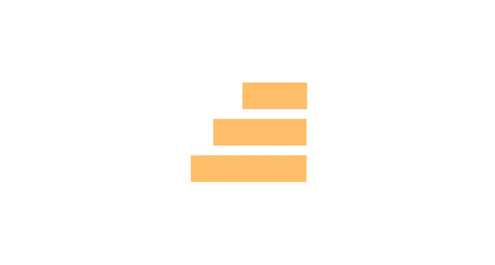
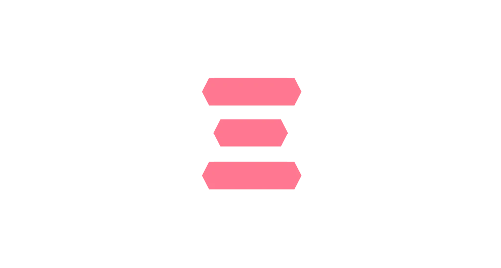
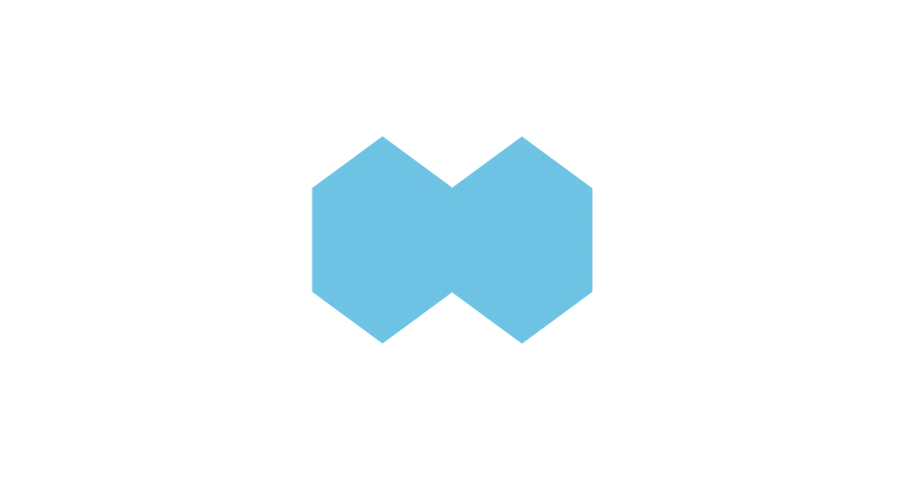
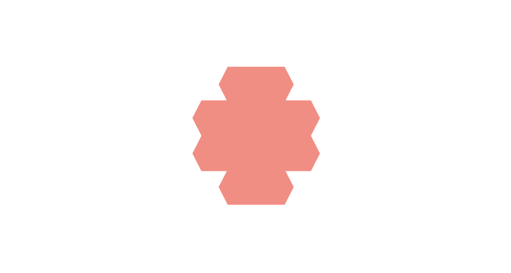

Hitta din drömutbildning inom IT
Våra YH-utbildningar
Att utveckla tjänster, appar och system är de mest eftertraktade och svårrekryterade kompetenserna idag. Därför finns vi! Tillsammans med lärare från branschen får du redan från start verklighetsbaserade uppdrag inom utveckling och design. Efter dina två år hos oss är du precis den kunniga IT-specialisten som marknaden skriker efter.
Än är det inte för sent att ansöka! Vi håller reservantagningen öppen fram till 13 september.
Fullstack Webbutvecklare Open Source
Fullstack .NET
Fullstack Javascript
Devops Engineer
Frontendutvecklare